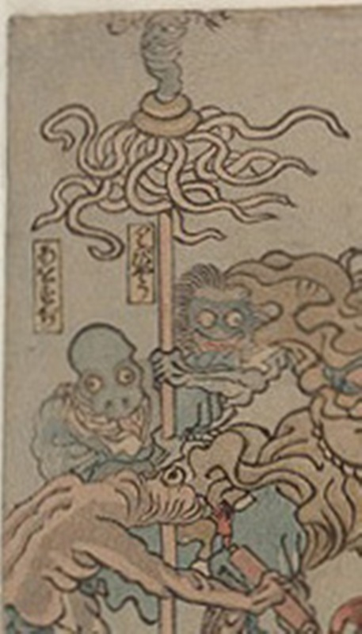

病気；ビョウキ，疫神；エキシン，青筋；アオスジ

青筋が擬人化した化物。長い舌を出し、爬虫類のような頭をしている。纏のようなものを持っている。
著作者：歌川芳虎／出典：親書誌：U426_nichibunken_0012：諸病諸薬の戦い；ショビョウショヤクノタタカイ／日付：2006／資源識別子：U426_nichibunken_0012_0019_0000
Copyright (c)2010- International Research Center for Japanese Studies, Kyoto, Japan. All rights reserved.